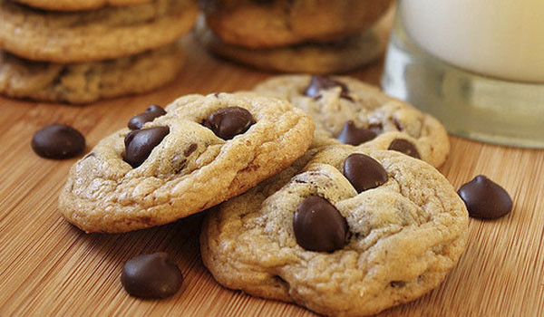

Bolo Red Velvet
Receita do bolo mais lindo e saboroso de todos!
Nessa receita, não iremos usar nenhum corante. O que dará a cor avermelhada à massa será a beterraba! E eu garanto que o gosto do legume não permanece no nosso bolo!

Ingredientes:
- 280 gramas beterraba crua (2 unidades médias)
- 3 ovos
- 90 gramas óleo de girassol
- 370 gramas açúcar refinado
- 80 gramas suco de limão (2 limões pequenos)
- 330 gramas farinha de trigo branca
- 1 colher de sopa fermento químico
Modo de preparo:
- Pré aqueça o forno a 180 graus. Eu usei 2 assadeiras redondas de 20 cm de diâmetro.
- Bata no liquidificador: a beterraba, óleo, ovos, açúcar e suco de limão.
- Em uma tigela grande, peneire a farinha de trigo e o fermento. Junte a mistura líquida aos ingredientes secos e misture até obter uma massa uniforme.
- Despeje a massa na assadeira e asse por 40 minutos (espete um palito no centro do bolo pra checar e está assado – palito saiu seco, tá pronto).
Cobertura de cream cheese (opcional)
Para fazer a cobertura do Red Velvet de Beterraba sem corante: na batedeira, misture 75 g de manteiga amolecida com 150 g de açúcar de confeiteiro, até obter um creme lisinho.
Depois, junte 150 g de cream cheese +1/2 col chá de extrato de baunilha. Leve pra geladeira e passe entre os bolos e na cobertura.
hskjfnskjvsvsfkjvbdkjbbdkjnkjbkgbkjdgbgbngkjbngjbnfgkjbnkjbdkjbdkgjjbgkjbdgjkbdkjbdgkjbdgkbdkjjbjbdgjbdkjjbbgjbdjjbdjbdgkjbjndjbdkjbjndkjbndkjbndkjjbdkjjbdjkbdgjkbdjkjbdgkbndkjbdjjbndkjbndkjbndjnbdjnbbbjdbbdnbjdnbdgjnbjbndgjbndjgnbgydgftrdbdtcfgcg

experimente fazer essa receita deliciosa também!